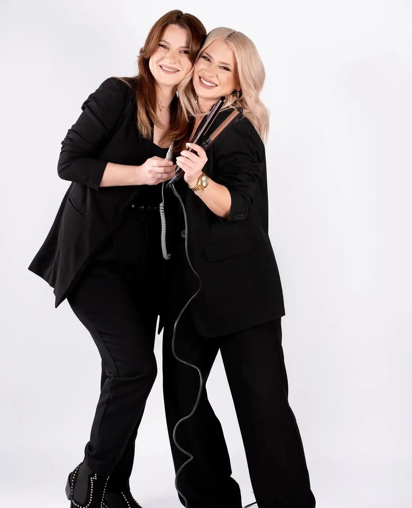
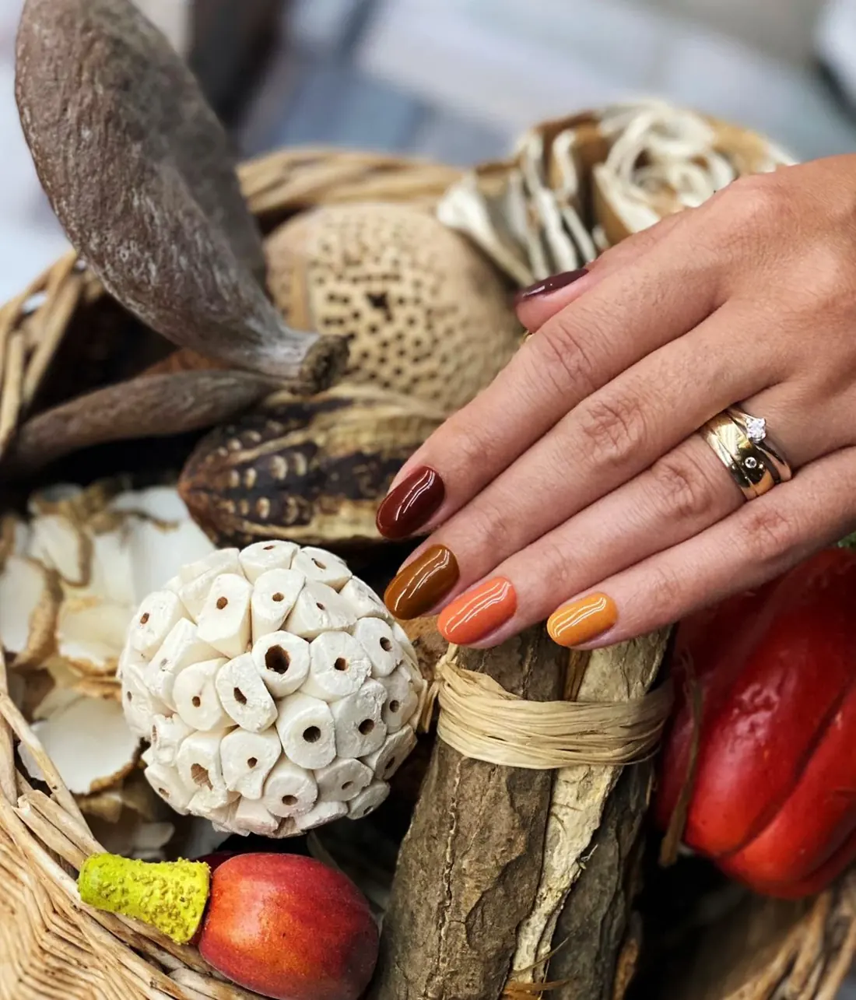
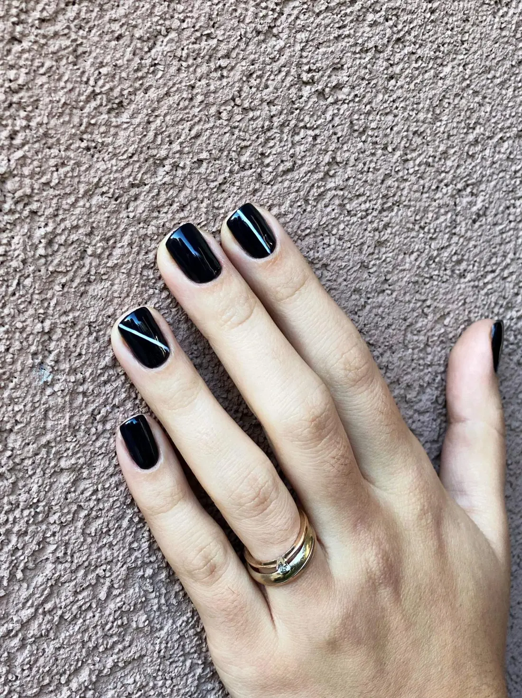
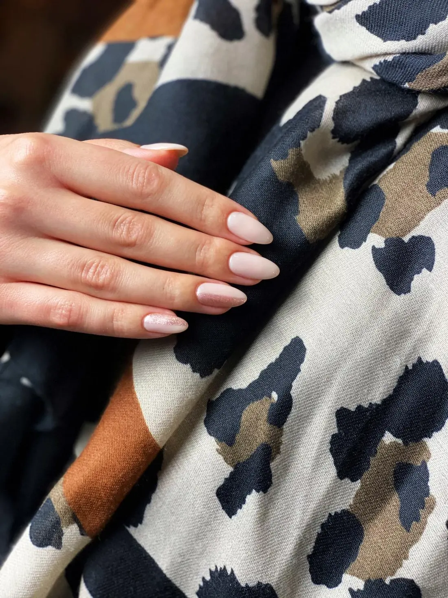
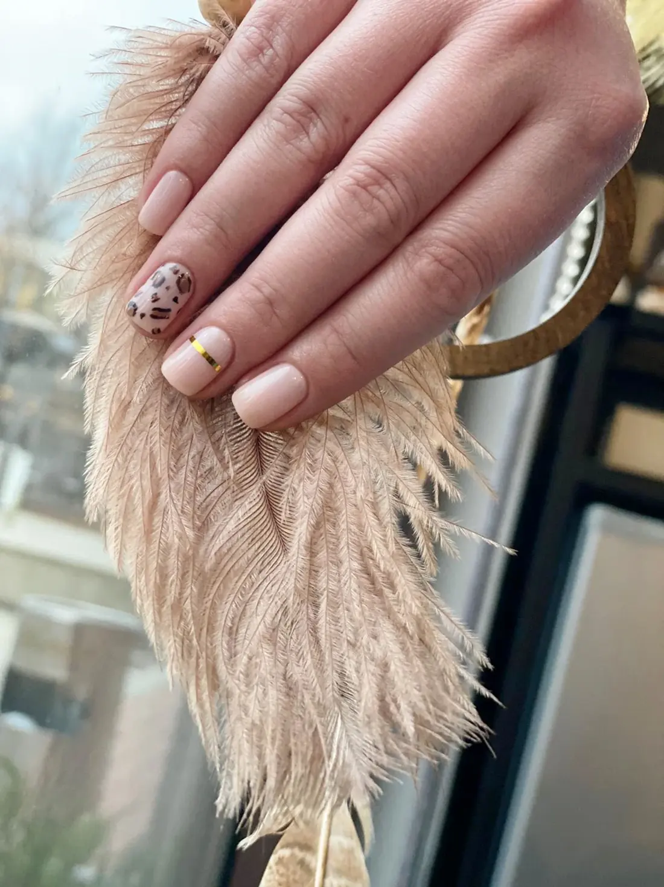
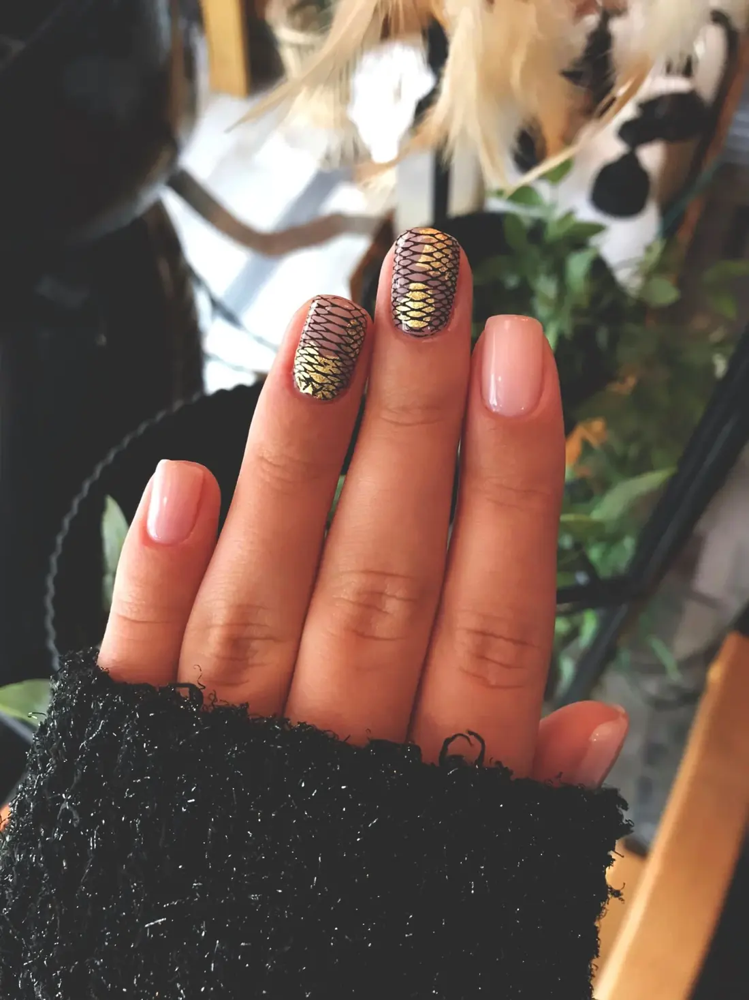
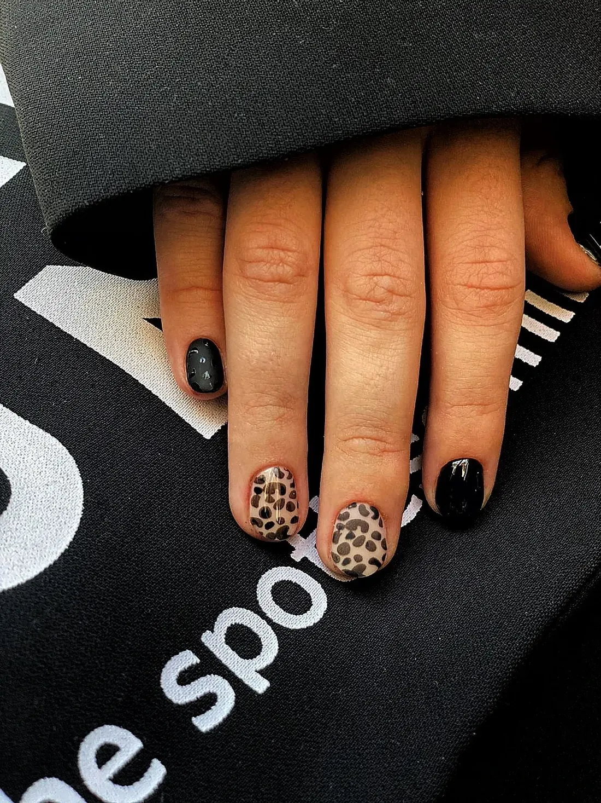
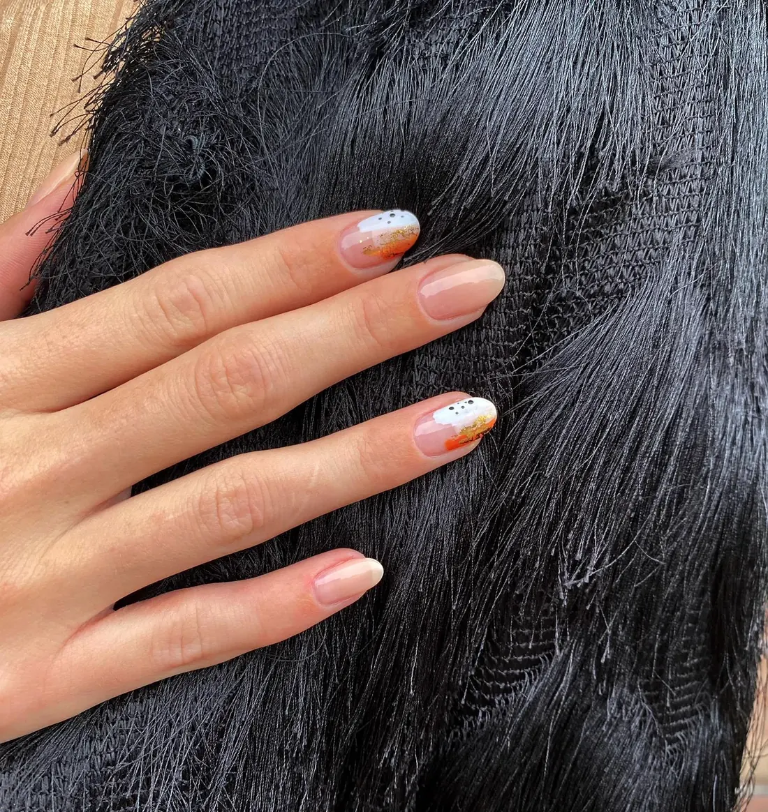
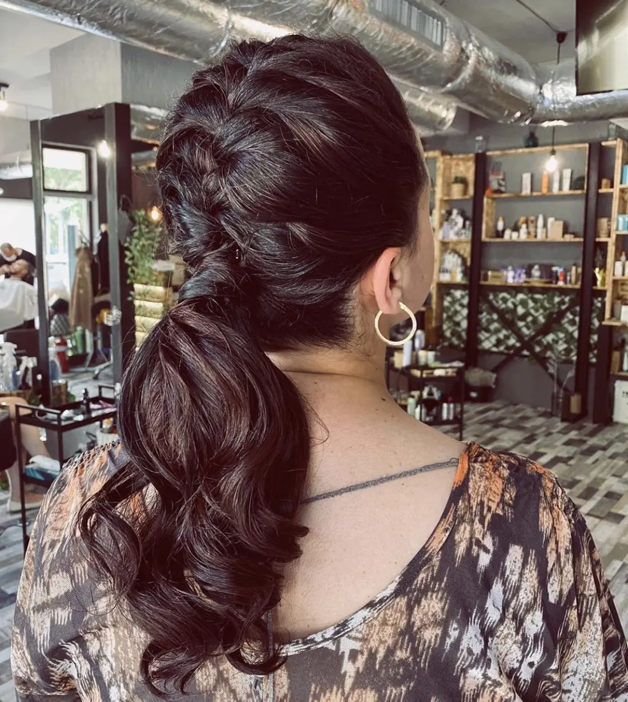

{{SÂMBĂTĂ|SATURDAY|SÁBADO}}Complex Newton · Vasile Lupu 78A
Weekend{{feel it every day — weekendul, în fiecare zi a săptămânii.|feel it every day — the weekend, any day of the week.|feel it every day — o fim de semana, em qualquer dia da semana.}}
{{Păr și unghii, făcute fără grabă, ca într-o sâmbătă. Alegi serviciul, ziua și intervalul, iar programarea pleacă scrisă — pe WhatsApp sau prin SMS.|Hair and nails, done unhurried, like on a Saturday. Pick the service, the day and the time, and your booking goes out already written — by WhatsApp or SMS.|Cabelo e unhas, sem pressa, como num sábado. Escolhe o serviço, o dia e o período, e a marcação sai já escrita — por WhatsApp ou SMS.}}
{{Google · 227 de recenzii|Google · 227 reviews|Google · 227 avaliações}}

{{Începi săptămâna cu unghiile făcute.|Start the week with your nails done.|Comece a semana com as unhas feitas.}}
{{O singură culoare, lucioasă și curată: negru, nude, roz lăptos sau o toamnă întreagă în cinci nuanțe.|One colour, glossy and clean: black, nude, milky pink — or a whole autumn in five shades.|Uma só cor, brilhante e limpa: preto, nude, rosa leitoso — ou um outono inteiro em cinco tons.}}




{{Marțea e pentru un detaliu în plus.|Tuesday is for one extra detail.|Terça é para um detalhe a mais.}}
{{Folie aurie în solzi, leopard pe două unghii, vârfuri pictate cu auriu pe formă de migdală.|Gold foil scales, leopard on two nails, gold-painted tips on almond shapes.|Folha dourada em escamas, leopardo em duas unhas, pontas pintadas a dourado em forma de amêndoa.}}




{{Culoare și coafuri.|Colour and styling.|Cor e penteados.}}
{{Ginger cald, luminos, cu reflexe arămii — nuanța sezonului la noi.|Warm, bright ginger with copper glints — our shade of the season.|Ginger quente e luminoso, com reflexos acobreados — o tom da estação cá em casa.}}
{{Vopsit, reflexe și coafuri de ocazie: bucle mari, cozi joase, păr întins cu placa. Spune-ne ce vrei și îți propunem nuanța potrivită.|Colour, highlights and occasion styling: big curls, low ponytails, straightened hair. Tell us what you want and we’ll suggest the right shade.|Coloração, madeixas e penteados de ocasião: caracóis grandes, rabos baixos, cabelo esticado à prancha. Diga o que quer e propomos o tom certo.}}
{{Programarea, în trei rânduri.|Booking, in three lines.|A marcação, em três linhas.}}
{{Serviciul|The service|O serviço}}
{{Culoare, coafură, manichiură sau nail art — ori „altceva”, scris de tine.|Colour, styling, manicure or nail art — or “something else”, in your words.|Cor, penteado, manicure ou nail art — ou “outra coisa”, nas suas palavras.}}
{{Ziua|The day|O dia}}
{{Din calendarul următoarelor două săptămâni, plus intervalul care îți convine.|From the next two weeks’ calendar, plus the time of day that suits you.|Do calendário das próximas duas semanas, mais o período que lhe convém.}}
{{Trimiți|Send it|Envia}}
{{Pe WhatsApp sau prin SMS. Salonul îți confirmă ora exactă.|By WhatsApp or SMS. The salon confirms the exact time.|Por WhatsApp ou SMS. O salão confirma a hora exata.}}
{{Două femei, un salon.|Two women, one salon.|Duas mulheres, um salão.}}
{{Weekend e condus de femei, în costum negru și cu placa în mână. Clientele lor se întorc — se vede în cifre.|Weekend is run by women, in black suits with the straightener in hand. Their clients come back — the numbers show it.|O Weekend é gerido por mulheres, de fato preto e prancha na mão. As clientes voltam — vê-se nos números.}}
{{Și ai ajuns la weekend.|And you’ve made it to the weekend.|E chegou ao fim de semana.}}
- {{Adresă|Address|Morada}}
- Str. Vasile Lupu 78A, complex Newton, Bl. N1, parter · Iași
- {{Reper|Landmark|Referência}}
- Lidl Vasile Lupu
- {{Telefon|Phone|Telefone}}
- 0747 377 645
- {{Program|Hours|Horário}}
- {{Miercuri 10–18|Wednesday 10–18|Quarta 10–18}} · {{restul zilelor de confirmat|other days to be confirmed|restantes dias a confirmar}}
{{Păr & unghii.|Hair & nails.|Cabelo & unhas.}}
{{Tot ce vezi aici e lucrat în salon. Prețul și durata le afli de la salon, la programare.|Everything here was done in the salon. Price and duration come from the salon when you book.|Tudo o que vê aqui foi feito no salão. Preço e duração são dados pelo salão na marcação.}}
{{Altceva?|Something else?|Outra coisa?}}
{{Tuns, tratamente, pedichiură — întreabă salonul ce mai face.|Cuts, treatments, pedicure — ask the salon what else they do.|Corte, tratamentos, pedicure — pergunte ao salão o que mais faz.}} {{listă completă de confirmat|full list to be confirmed|lista completa a confirmar}}
{{Serviciu, zi, interval.|Service, day, time.|Serviço, dia, período.}}
{{Pagina din agendă se completează pe măsură ce alegi. O trimiți pe WhatsApp sau prin SMS, iar salonul îți confirmă ora.|The planner page fills in as you choose. Send it by WhatsApp or SMS and the salon confirms the time.|A página da agenda preenche-se à medida que escolhe. Envie por WhatsApp ou SMS e o salão confirma a hora.}}
{{Feel it every day.|Feel it every day.|Feel it every day.}}
{{Un salon de cartier în complexul Newton, cu tavan industrial, rafturi de lemn și plante — și o idee simplă: să ieși de aici ca într-o sâmbătă dimineață.|A neighbourhood salon in the Newton complex, with an industrial ceiling, wooden shelves and plants — and one simple idea: leave feeling like it’s Saturday morning.|Um salão de bairro no complexo Newton, com teto industrial, prateleiras de madeira e plantas — e uma ideia simples: sair daqui como num sábado de manhã.}}
{{În negru, cu placa în mână.|In black, straightener in hand.|De preto, prancha na mão.}}
- {{Nume|Names|Nomes}}{{de confirmat|to be confirmed|a confirmar}}
- {{Păr|Hair|Cabelo}}{{Culoare, reflexe arămii, coafuri și bucle.|Colour, copper glints, styling and curls.|Cor, reflexos acobreados, penteados e caracóis.}}
- {{Unghii|Nails|Unhas}}{{Manichiură într-o culoare, folie aurie, leopard, detalii pictate.|One-colour manicure, gold foil, leopard, painted details.|Manicure numa cor, folha dourada, leopardo, detalhes pintados.}}
- {{Unde|Where|Onde}}{{Complex Newton, Bl. N1, parter — reper: Lidl Vasile Lupu.|Newton complex, Bl. N1, ground floor — landmark: Lidl Vasile Lupu.|Complexo Newton, Bl. N1, rés-do-chão — referência: Lidl Vasile Lupu.}}
{{Săptămâna în poze.|The week in pictures.|A semana em fotos.}}
{{Complex Newton, Bl. N1.|Newton complex, Bl. N1.|Complexo Newton, Bl. N1.}}
{{Str. Vasile Lupu 78A, la parter. Sună pentru o programare rapidă sau scrie-ne.|Str. Vasile Lupu 78A, ground floor. Call for a quick booking or write to us.|Str. Vasile Lupu 78A, rés-do-chão. Ligue para marcar depressa ou escreva-nos.}}
{{Program|Opening hours|Horário}}
{{Scrie sau sună|Write or call|Escreva ou ligue}}
E-mail: weekend.feel.it.every.day@gmail.com
Facebook: salonweekendiasi